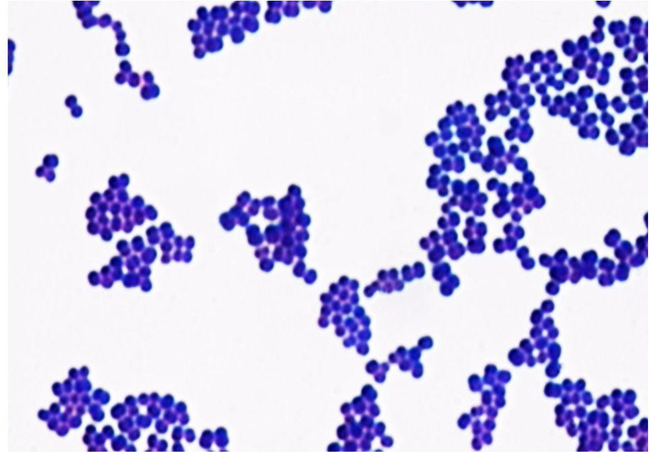
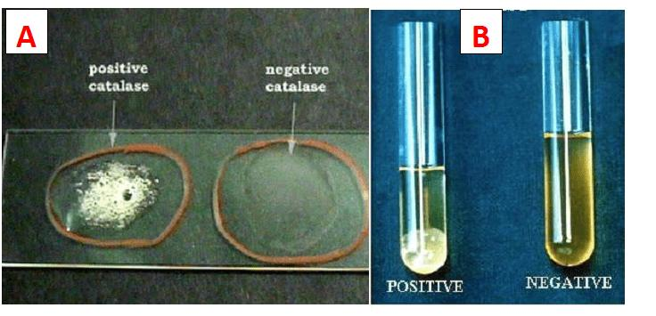
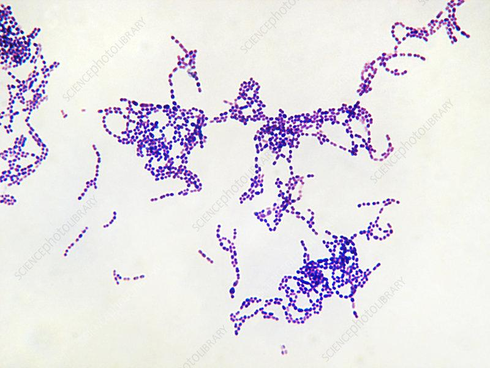
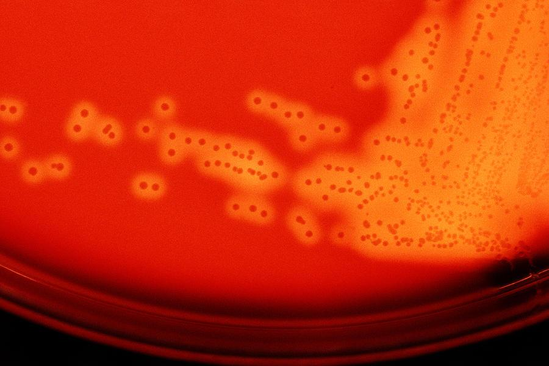
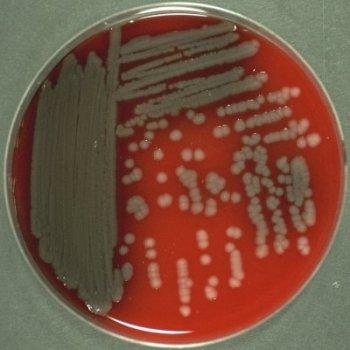
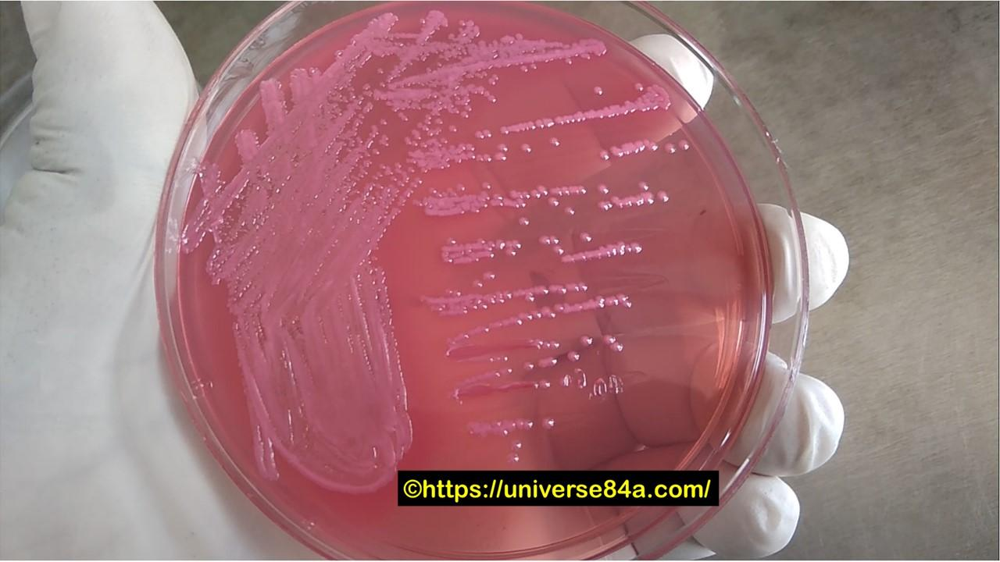
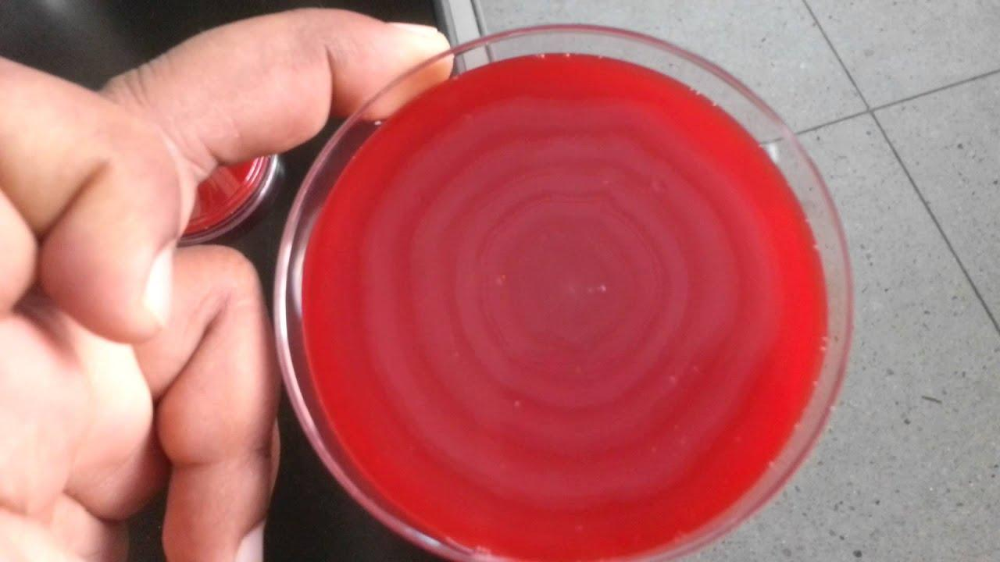
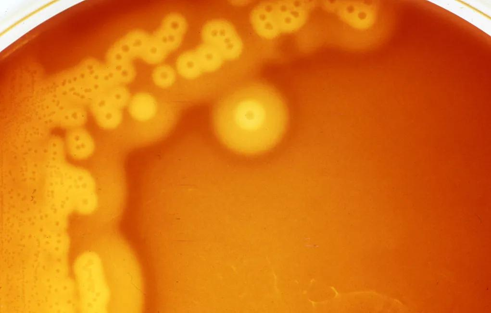
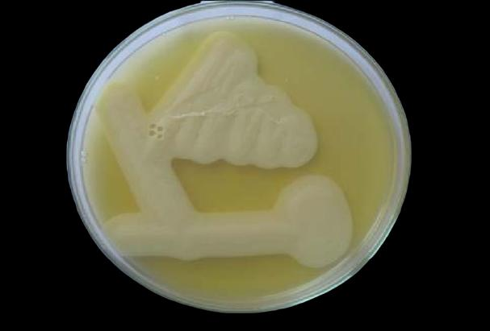

Specimens and routes of infection
Osteomyelitis: direct inoculation after trauma or surgery, contiguous spread from an adjacent infection, or hematogenous spread through the blood.
| Suspected infection | Specimen and tests |
|---|---|
| Osteomyelitis | Bone biopsy for aerobic and anaerobic cultures. Surface swabs can grow colonizing flora. |
| Septic arthritis | Aseptically aspirate synovial fluid for Gram stain, culture, white blood cell count and crystals. Crystals can coexist with infection. |
| Wound infection | Deep tissue or aspirate for deep infections. For a superficial swab, clean with sterile saline first. |
Collect cultures before antibiotics when feasible.
Gram-positive cocci
Staphylococcus aureus: clusters, catalase positive, coagulase positive. Streptococcus pyogenes: chains, beta hemolysis and a pink positive pyrrolidonyl arylamidase (PYR) test. Bacitracin sensitivity is a presumptive Group A clue. Lancefield grouping detects cell-wall carbohydrate by latex agglutination.

S. aureus – Gram stain
Purple (Gram-positive) cocci in grape-like clusters.
1. Cluster of purple cocci

Catalase (A) and Coagulase (B) tests
A: slide catalase – bubbles = positive; no bubbles = negative. B: tube coagulase – clot = positive; no clot = negative.
1. Bubbling = catalase positive
2. Tube POSITIVE (clot)
3. Tube NEGATIVE (stays liquid)

S. pyogenes – Gram stain
Purple cocci arranged in CHAINS.
1. Chains of cocci

β-hemolysis on blood agar
Clear/translucent zones around colonies.
1. Clear halos around colonies
Gram-negative rods
MacConkey agar selects for Gram-negative organisms and differentiates lactose fermenters (pink) from non-fermenters (colorless).
| Organism | Fast identification |
|---|---|
| Pseudomonas aeruginosa | Colorless on MacConkey, oxidase positive, blue-green pigment on cetrimide. |
| Escherichia coli and Klebsiella pneumoniae | Pink on MacConkey. Mucoid growth suggests Klebsiella; colony appearance alone cannot confirm species. |
| Proteus | Colorless on MacConkey, swarming on blood agar, pink positive urease test and black hydrogen sulfide precipitate. |
Blue-green pigment on Cetrimide agar
Green-blue diffusing pigment (also fruity odor).
1. Green-blue pigment in agar

Colorless colonies on MacConkey agar
Pale/colorless colonies = no lactose fermentation.
1. Colorless/grey growth

Pink colonies on MacConkey agar (plate 1)
Gram-negative rods; pink colonies = lactose fermenters. (Slide doesn’t label which plate is which.)
1. Pink = lactose fermenter

Swarming on blood agar
Concentric waves of growth spread over the whole plate.
1. Concentric swarming rings
Anaerobes
Clostridium perfringens: boxcar-shaped, Gram-positive, spore-forming rods associated with gas gangrene. Fusobacterium forms thin, tapered Gram-negative rods. Bacteroides fragilis forms Gram-negative rods. Peptostreptococcus forms Gram-positive cocci.

Double zone of β-hemolysis
Inner clear zone + outer zone of partial hemolysis around colonies on blood agar.
1. Double zone

Egg yolk agar – lecithinase / Nagler
Alpha-toxin splits lecithin → insoluble diglyceride + phosphorylcholine → white opaque halo (opalescence).
1. Opaque halo around growth
Practical quiz
No incorrect answers in this attempt yet.